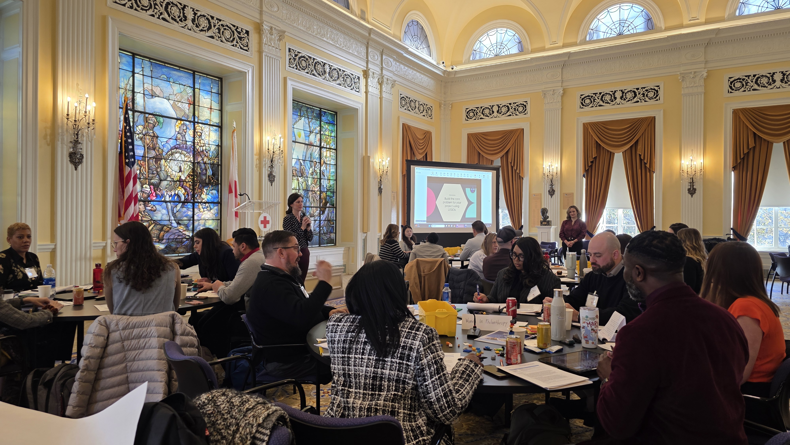
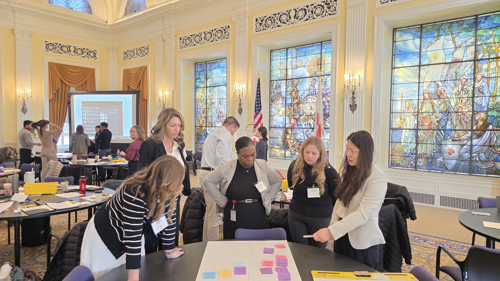

Smart people.
Jumping to solutions.
By January 2026, the LEAD cohort was at a pivot point: project teams had just formed and the real work was beginning. The program manager's concern was familiar to anyone who's watched capable people rush past the problem — teams were eager to solve, but weren't spending enough time understanding what they were actually trying to solve for.
We were asked to design a 90-minute session for day two of a three-day DC intensive. It was also the Design Guild's debut — four designers and a senior director of product, facilitating together in front of senior Red Cross leadership for the first time.

What would they need to
leave believing?
Before designing a single activity, I met with the LEAD program manager to understand what wasn't working. Three pain points came up: teams struggled to let go of ideas that weren't panning out, they had a fuzzy picture of who they were solving for, and they underestimated how much their assumptions were shaping their direction.
Those became the backbone. We designed backwards from a single question: what would participants need to leave believing, knowing, and able to do? We also made one deliberate cut — no ideation. The goal was to slow teams down before they committed to a solution, not help them generate more of them.
Six acts in
ninety minutes.

Tools they could use
the next morning.
We used their actual projects, not hypotheticals
Every activity was grounded in the real project each team had just been assigned. The tools felt immediately useful rather than theoretical because participants were applying them to work that actually mattered to them.
LEGO made invisible misalignment visible
Two people can use identical words to describe a problem and have completely different mental models of it. Building the problem in LEGO and comparing builds surfaced that — fast. Making it visible early is one of the most valuable things a team can do before starting work.
Assumption mapping traveled beyond the session
Of all the tools introduced, this got the strongest response. Participants saw immediately how to apply it not just to their LEAD projects, but to how they work day-to-day — a shared language for the difference between what you know and what you're betting on.
Invited back
before we'd left the room.
Feedback came from multiple directions — participants said it was immediately applicable, program leadership said the tools would travel beyond the session, and the program manager extended an invitation to make it part of annual LEAD programming.
"Your ability to guide participants through questioning techniques, assumptions, and structured problem-definition tools was incredibly valuable."— LEAD Program Manager
"One of the most valuable — and actionable — sessions they've had."— Product Manager and LEAD participant